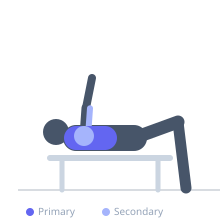

Exercise guide / Single-Arm Machine Chest Press
Single-Arm Machine Chest Press
The Single-Arm Machine Chest Press performs a unilateral pressing movement using one arm at a time on a plate-loaded or selectorized chest press machine. This variation corrects strength imbalances between sides, creates an anti-rotation core demand, and allows the working arm's pectoral to be trained through its full active range without the limitation of the weaker arm.
Primary muscles
pectoralis major sternal
pectoralis major clavicular
Secondary muscles
deltoid anterior
triceps lateral head
Stabilizers
internal oblique
external oblique
pectoralis minor
Equipment
Chest Press Machine


Starting position
- Sit in the chest press machine. Grip one handle at chest level. The other arm can hold the frame of the machine for stability.
Setup
- If the machine has independent arms, use one arm. Set the seat and handle position as normal. The stationary arm grips the machine frame, not the other handle.
Steps
- Step 1: Press one arm forward to full extension.
- Step 2: Return to starting position under control.
- Step 3: Complete all reps on one side, then switch.
- Step 4: Resist the rotation created by the unilateral load — keep torso square.
Coaching cues
- Fight the rotation — keep both hips and shoulders square
- Feel the working pec from stretch to squeeze
Breathing
- Exhale on each press. Inhale on return.
Range of motion
- Full extension; full return to deep stretch on working side.
Tempo
- 2-1-2-0
Common mistakes
- Rotating the torso toward the pressing arm
- Using a machine that does not allow independent arm movement
Safety
- Only perform on machines with independent arm mechanisms
- Use a significantly lighter load than your bilateral press
Training
- hypertrophy: 10–15 reps
- hypertrophy: 3–4 sets
- Rest: {'hypertrophy': 75}